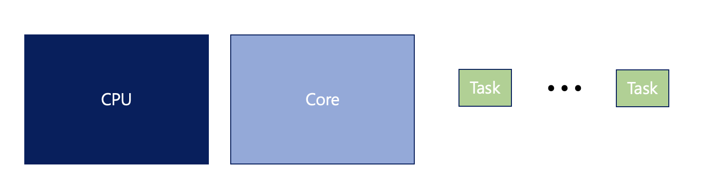
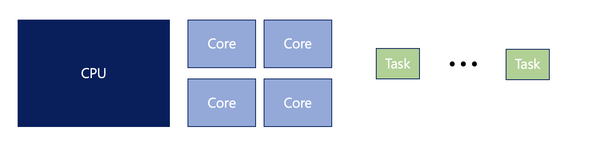
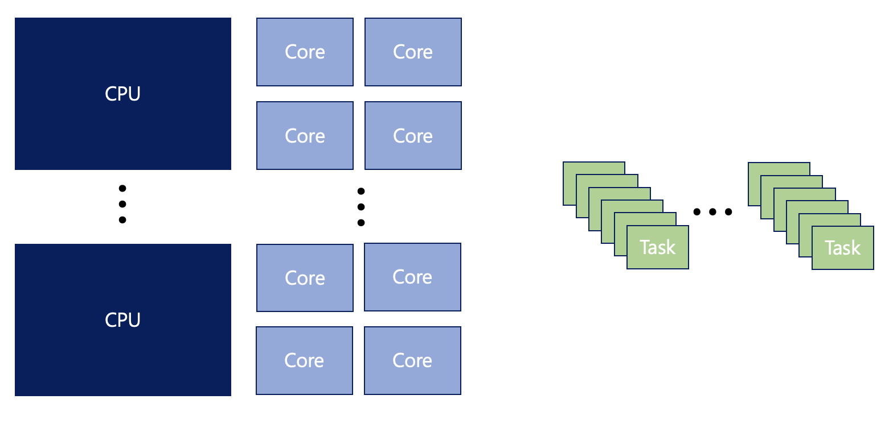

멀티프로세싱 vs 싱글프로세싱
멀티프로세싱
여러 개의 CPU를 사용하여 작업을 동시에 처리하여 컴퓨터 성능을 향상시킵니다.
싱글프로세싱
하나의 CPU가 한 번에 하나의 작업만 처리하여 성능이 제한됩니다.
멀티프로세싱 관련개념
명령어 병렬 처리
CPU 1 코어 1 Task n 의 형태로 하나의 코어가 n개의 작업을 수행(여러 작업자가 있는 것처럼 운용하는 방법 : 하이퍼쓰레딩)
멀티코어
CPU 1 코어 n Task m 의 형태로 n개의 코어로 m개의 작업을 수행
멀티프로세서 시스템
CPU n 코어 m Task l의 형태로 n개의 cpu로 n x m 개의 코어로 l개의 작업을 수행
동시성과 병렬성
동시성
여러 작업을 동시에 수행, 예시로 자동차 A와 자동차 B를 동시에 생산
병렬성
하나의 작업을 여러 프로세스로 나누어 동시에 수행, 예시로 자동차 A의 타이어와 핸들을 동시에 생산